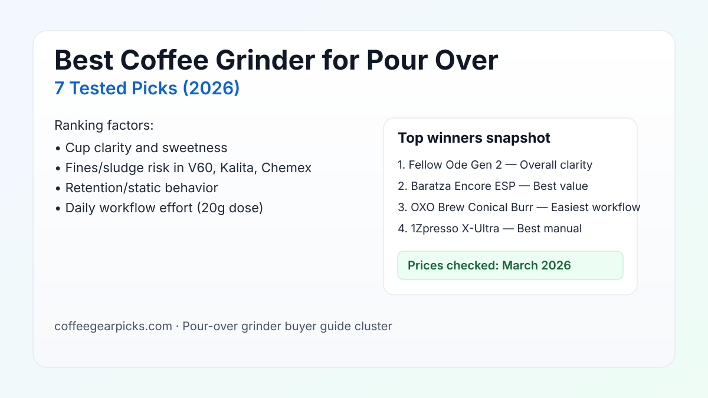

Best Coffee Grinder for Pour Over (2026): 7 Researched Picks
A great pour-over grinder should make cups cleaner, sweeter, and easier to repeat before 7 a.m.—not just look good on a spec sheet. We ranked seven options by real-world cup clarity, fines control, retention/static behavior, and how easy they are to live with every day.

Quick answer: For most buyers, Fellow Ode Gen 2 is the best coffee grinder for pour over because it consistently delivers clear cups with low retention mess. Baratza Encore ESP is the strongest value pick, while 1Zpresso K-Ultra is the safest manual choice if you want top grind quality per dollar.
TL;DR winners
Best overall clarity: Fellow Ode Gen 2
Best value: Baratza Encore ESP
Easiest daily workflow: OXO Brew Conical Burr
Best manual: 1Zpresso K-Ultra
Comparison table
Prices checked: March 2026
| Product | Best for | Grinder type | Burr geometry | Sweet-spot grind range for pour-over | Clarity/body profile note | Fines/sludge risk | Retention/static behavior | Workflow effort (20g dose) | Cleanup effort | Price band | Espresso-capable | Amazon |
|---|---|---|---|---|---|---|---|---|---|---|---|---|
| Fellow Ode Gen 2 | Best overall clarity | Electric | 64 mm flat burr | Medium-fine to medium-coarse | High clarity, lighter body | Low | Low retention; occasional light static in dry air | Very low effort (~15-20 sec) | Low | $$$ | No (filter-focused range) | Check price |
| Baratza Encore ESP | Best value crossover | Electric | 40 mm conical steel burr | Medium to medium-coarse | Balanced clarity with more body | Low-Medium | Medium retention; stable with light purge | Low effort (~18-25 sec) | Low | $$ | Yes | Check price |
| OXO Brew Conical Burr | Easiest workflow | Electric | Conical stainless steel burr | Medium to coarse | Moderate clarity, fuller cup | Medium | Medium static in dry kitchens; retention manageable | Low effort (~20-25 sec) | Low | $ | No | Check price |
| 1Zpresso K-Ultra | Best manual quality | Manual | Conical stainless steel burr | Medium-fine to coarse | High clarity with good sweetness | Low | Very low retention/static | Medium effort (~35-45 sec) | Low | $$$ | Yes | Check price |
| TIMEMORE Chestnut C2 | Best budget manual | Manual | CNC conical stainless steel burr | Medium to medium-coarse | Good body, moderate clarity | Medium | Low retention; fines accumulate if neglected | Medium effort (~40-55 sec) | Low | $ | No | Check price |
| Fellow Opus | Best compact electric | Electric | 40 mm conical stainless steel burr | Medium-fine to coarse | Balanced cups with mild sweetness | Medium | Low retention; static pops on light roasts | Low effort (~18-25 sec) | Medium | $$ | Yes | Check price |
| KINGrinder K6 | Best manual upgrade under $150 | Manual | 48 mm heptagonal conical burr | Wide medium-fine to coarse range | Clean cups with better separation | Low | Near-zero retention; very low static | Medium effort (~30-40 sec) | Low | $$ | Yes | Check price |
How we evaluate
Every grinder here is scored on brew quality, grinder consistency, usability, cleaning burden, and value for money. For pour-over pages, we add extra weight to fines control, cup clarity, and morning workflow friction (retention mess, adjustment speed, and how predictable settings are day to day).
Product picks by brew-method fit
1) Fellow Ode Gen 2 — Best for V60 clarity-focused brewers
Verdict: Best for daily V60 users who want clean flavor separation and low-retention single-dose workflow.
Pros
- Flat burr profile emphasizes clarity and sweetness in light/medium roasts.
- Low-retention chute keeps recipe changes cleaner.
- Simple dosing routine with minimal morning mess.
Cons
- Costs more than entry-level conical grinders.
- Not the best fit if you need true espresso range.
Key specs: ASIN B0BLRMCM9Y · 64 mm flat burr set · 31 grind settings · Espresso-capable: No (filter-first range).
Why it wins this slot: It produces the cleanest cups in this list without adding workflow complexity.
Retention/static behavior: Retention is low; static appears occasionally with very dry, lightly roasted beans.
Check Fellow Ode Gen 2 price on Amazon
2) Baratza Encore ESP — Best for Kalita users who also pull espresso
Verdict: Best value for buyers splitting time between Kalita or V60 and occasional espresso.
Pros
- Broad grind range for mixed brew styles.
- Beginner-friendly adjustment logic and strong parts support.
- Consistent enough for daily filter coffee without fuss.
Cons
- Stepped control is less precise than stepless alternatives.
- Hopper workflow can hold stale exchange grounds.
Key specs: ASIN B0BW272XCV · 40 mm conical steel burrs · dual-range stepped adjustment · Espresso-capable: Yes.
Why it wins this slot: Safest all-around value when you need one grinder to cover both filter and espresso experimentation.
Retention/static behavior: Medium retention and static; a short purge keeps repeatability stable.
Check Baratza Encore ESP price on Amazon
3) OXO Brew Conical Burr — Best easiest-workflow choice for Chemex and batch brews
Verdict: Best for busy mornings where quick, predictable operation matters more than maximum cup clarity.
Pros
- Straightforward timer workflow with minimal learning curve.
- Reliable grind output for medium-coarse Chemex targets.
- Low maintenance burden for first-time grinder owners.
Cons
- More fines than top-tier clarity grinders.
- Static in dry air can create bin mess.
Key specs: ASIN B07CSKGLMM · conical stainless steel burrs · one-touch timed grinding · Espresso-capable: No.
Why it wins this slot: It is the fastest route to better pour-over consistency without spending mid-tier money.
Retention/static behavior: Retention is manageable, but static can spike in low-humidity conditions.
Check OXO Brew Conical Burr price on Amazon
4) 1Zpresso K-Ultra — Best manual for V60 and travel kits
Verdict: Best manual grinder for brewers who want premium grind quality per dollar and portable setup.
Pros
- Strong particle consistency for manual price tier.
- Compact form factor works well for travel and office use.
- External-style control is easy to repeat once logged.
Cons
- Manual effort is real when grinding multiple cups.
- Not ideal for households brewing large batches daily.
Key specs: ASIN B0CC4LXF1Z · conical stainless steel burr · external numeric adjustment · Espresso-capable: Yes.
Why it wins this slot: Delivers near-electric cup quality for pour-over without electric noise or footprint.
Retention/static behavior: Very low retention/static due to direct grind path and small chamber volume.
Check 1Zpresso K-Ultra price on Amazon
5) TIMEMORE Chestnut C2 — Best budget manual under $100
Verdict: Best starter manual grinder for pour-over buyers moving up from blade grinders on a strict budget.
Pros
- Dependable grind quality for entry-level pricing.
- Simple stepped adjustment beginners can learn quickly.
- Compact body and low maintenance needs.
Cons
- Slower grind speed than higher-end manual grinders.
- More fines than top clarity-focused picks.
Key specs: ASIN B0833SDN8M · 25 g capacity · CNC conical stainless steel burr · Espresso-capable: No.
Why it wins this slot: It is the safest low-cost way to improve pour-over consistency without overcommitting budget.
Retention/static behavior: Retention stays low, but fines buildup appears faster if it is not brushed regularly.
Check TIMEMORE Chestnut C2 price on Amazon
6) KINGrinder K6 — Best manual upgrade for brew nerds on a mid budget
Verdict: Best for brewers who tweak recipes often and want tighter click precision than entry manual grinders.
Pros
- Wide useful range for V60, Kalita, and AeroPress.
- Excellent consistency and cup separation for the price.
- Low retention and tidy grounds drop.
Cons
- Heavier than compact travel hand grinders.
- Manual effort may annoy high-volume users.
Key specs: ASIN B09WH9JKY1 · 48 mm heptagonal burr · external click adjustment · Espresso-capable: Yes.
Why it wins this slot: It closes most of the performance gap to pricier grinders while staying in attainable pricing.
Retention/static behavior: Near-zero retention with very little static, even after back-to-back doses.
Check KINGrinder K6 price on Amazon
7) Fellow Opus — Best compact all-in-one for small kitchens
Verdict: Best for small apartments where one compact electric grinder needs to cover pour over plus occasional espresso.
Pros
- Compact footprint with broad grind coverage.
- Good cup quality once adjustment system is understood.
- Low retention for hopper-style daily use.
Cons
- Dual adjustment logic takes time to learn.
- Cleanup around chute can be more frequent than expected.
Key specs: ASIN B0BV96VPSR · 40 mm conical burr · 41 adjustable settings + inner ring · Espresso-capable: Yes.
Why it wins this slot: Most practical compact crossover pick when counter space is limited.
Retention/static behavior: Retention stays low; static scatter appears most with light-roast beans in dry months.
Check Fellow Opus price on Amazon
Dial-in + workflow guide
Start with grind size and brew-time target
For most pour-over recipes, start at medium-fine for V60 and medium for Kalita/Chemex, then adjust only one notch at a time. If drawdown stalls, go coarser. If cups taste hollow and sour, go finer. Pair this with our coffee brewing ratio guide for faster repeatability.
Conical vs flat burr for pour-over cups
Conical burr grinders usually give more body and forgiving sweetness. Flat burr grinders more often highlight separation and clarity. Neither is universally “best”—it depends on your preference and beans. If clarity is your north star, prioritize low-fines flat setups. If you want value and versatility, conical is usually safer.
Manual vs electric for daily use
Choose manual if you brew one to two cups and value grind quality per dollar. Choose electric if you batch brew or need speed before work. For more hand-grinder options in lower budgets, use our manual grinder under $100 guide.
How to reduce fines, bitterness, and sludge
Clean your burrs regularly, avoid over-heating beans with long grind sessions, and keep dose size consistent. A tiny RDT mist can reduce static on electric models. If your cups still taste muddy, compare cleaner-profile options in our best burr grinder under $200 roundup.
Maintenance cadence for consistent cups
Brush out loose grounds every 2-3 brews and deep-clean monthly. Regular cleaning lowers stale-oil buildup and keeps grind output stable. Follow the step-by-step routine in our burr grinder cleaning guide.
FAQ
What grind size is best for pour-over coffee (and how fine is too fine)?
Medium-fine is the usual starting point for V60 and medium for Kalita/Chemex. If drawdown is very slow or cups are bitter/astringent, you are probably too fine and should step coarser.
Conical vs flat burr for pour-over: which gives better clarity?
Flat burr grinders often produce cleaner flavor separation and higher clarity. Conical burrs usually deliver more body and forgiving sweetness. Pick based on cup preference, not forum hype.
Manual or electric grinder: which is better for daily pour-over use?
Manual is better for value, portability, and one-cup routines. Electric is better for speed and repeated daily brews. If you make multiple cups most mornings, electric usually wins on consistency and convenience.
How do I reduce fines, bitterness, or sludge in pour-over cups?
Use a grinder with stronger burr consistency, avoid ultra-fine settings, keep burrs clean, and reduce turbulence during pours. Most sludge issues come from excessive fines and stale grinder residue.
How often should I clean and recalibrate a grinder for consistent pour-over results?
Do quick dry brushing every few brews and deep-clean monthly. Recalibrate if your grinder supports it and grind size shifts unexpectedly after cleaning or burr wear.
Related guides
- Best Gooseneck Kettle for Pour Over
- Best Coffee Scale for Espresso & Pour Over
- Coffee Brewing Ratio Guide
- Best Burr Coffee Grinder Under $200
- Best Manual Coffee Grinder Under $100
- How to Clean a Burr Coffee Grinder